Hướng dẫn: Kho vận
Dành cho người đóng hàng và quản lý tồn kho (chị Thương). Gồm đóng đơn, nhập hàng mới, nhận hàng trả về và kiểm kho cuối tháng.
Video có lời đọc tiếng Việt và phụ đề. Thời lượng khoảng 2 phút 50 giây. Tải video về máy
1. Đăng nhập2. Tab Cần đóng3. Nhặt hàng và đóng cả kiện4. Tab Tồn kho5. Nhập hàng mới6. Trả hàng về7. Nhập nhầm thì hoàn tác8. Kiểm kho cuối tháng9. Sau khi chốt kiểm kho10. Nhắn tin với Shop
1. Đăng nhập
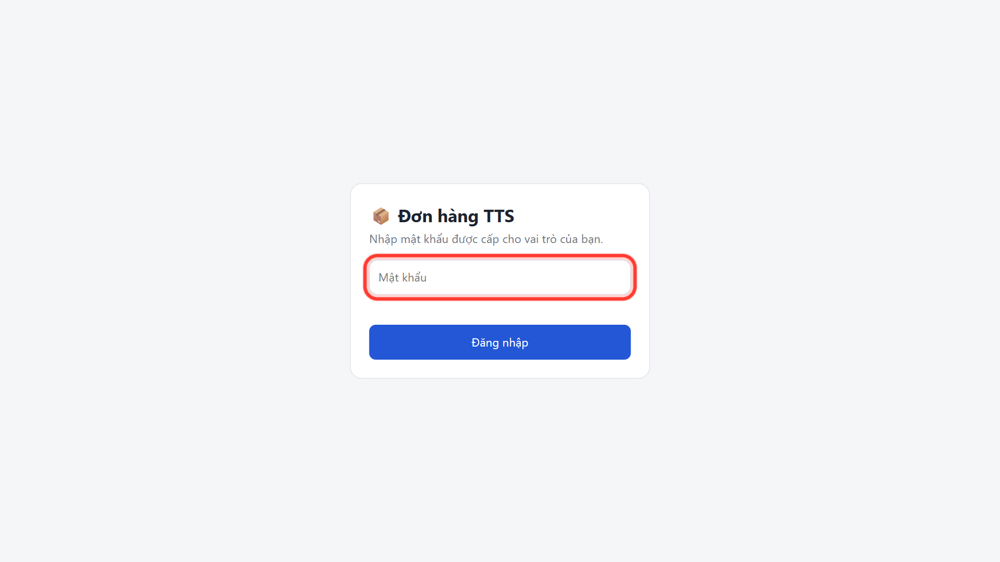
- Mở link app, nhập mật khẩu của vai trò Kho.
- Dùng máy chung thì bấm Đăng xuất ở góc phải.
2. Tab Cần đóng
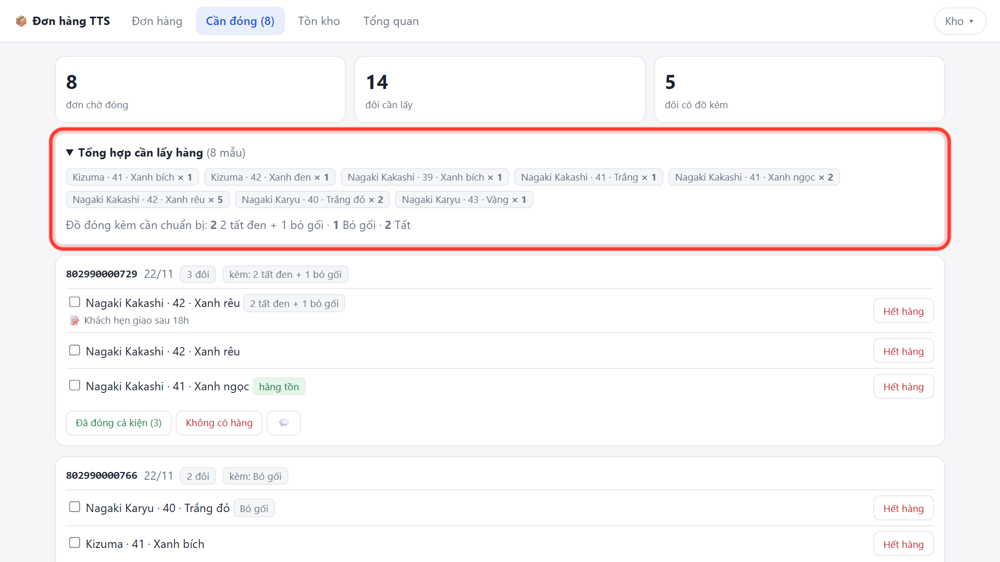
- Phía trên: số đơn chờ đóng, số đôi cần lấy, số đôi có đồ đóng kèm.
- "Tổng hợp cần lấy hàng" (bấm mở): mỗi mẫu cần lấy bao nhiêu đôi và đồ đóng kèm cần chuẩn bị, đi lấy một lượt cho nhanh.
- Số trong ngoặc ở tab "Cần đóng" là số đơn đang chờ.
3. Nhặt hàng và đóng cả kiện
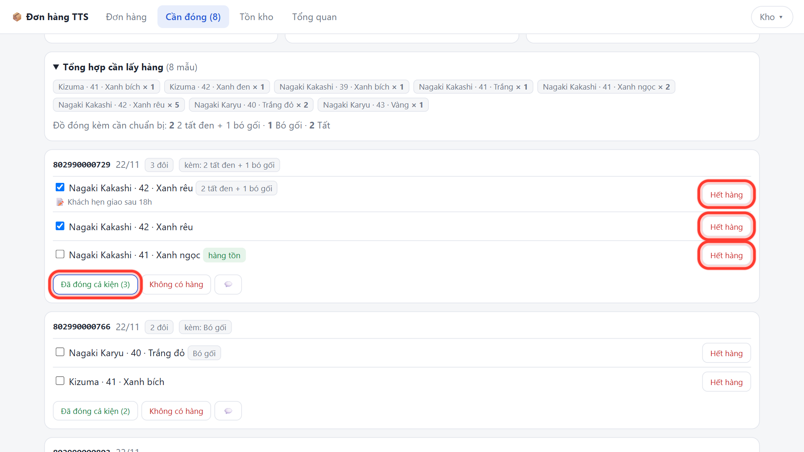
- Mỗi thẻ là một đơn: mã, ngày, số đôi, đồ đóng kèm và ghi chú của shop (📝).
- Tick từng đôi khi nhặt xong. Đủ hàng: bấm "Đã đóng cả kiện" (app hỏi lại nếu còn đôi chưa tick).
- Thiếu một đôi: bấm "Hết hàng" ở đôi đó. Hết cả đơn: "Không có hàng".
- Đôi hết hàng có hàng lại thì bấm "Có hàng lại". Shop sẽ thấy ngay trạng thái.
4. Tab Tồn kho
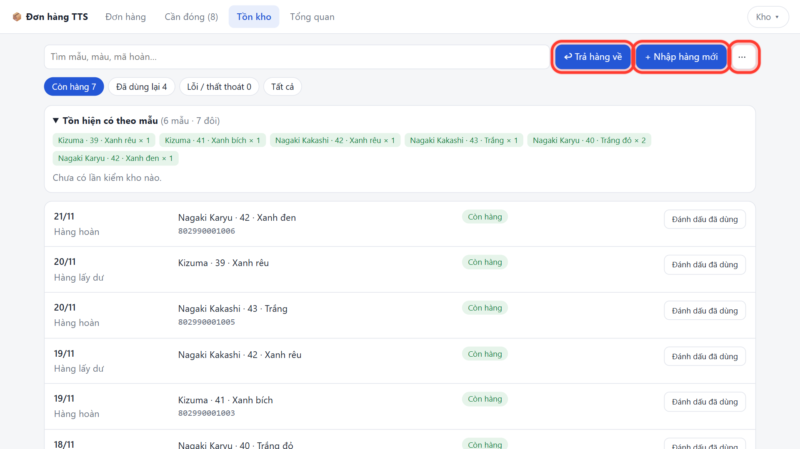
- Nhãn lọc: Còn hàng, Đã dùng lại, Lỗi / thất thoát, Tất cả. Ô tìm kiếm theo mẫu, màu, mã hoàn.
- "Tồn hiện có theo mẫu": mỗi mẫu còn bao nhiêu đôi (chỉ tính đôi Còn hàng).
- Hai nút: Trả hàng về, Nhập hàng mới. Dấu "⋯" bên cạnh chứa "Kiểm kho".
- Hàng shop dùng cho đơn sẽ tự đánh dấu "Đã dùng" và trừ khỏi kho.
5. Nhập hàng mới
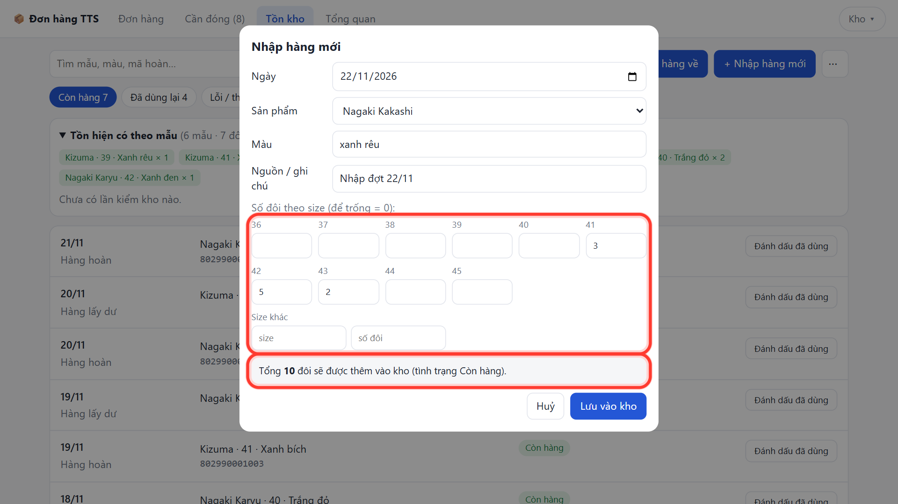
- Bấm "+ Nhập hàng mới": chọn sản phẩm (hoặc "Khác" để gõ tên), gõ màu, ghi chú nguồn nếu muốn.
- Ở lưới size, gõ số đôi cho từng size. Ví dụ size 41 × 3, size 42 × 5.
- Dòng tổng cho biết tổng số đôi sẽ thêm. Bấm "Lưu vào kho".
- Không có hàng mới thì bỏ qua bước này.
6. Trả hàng về
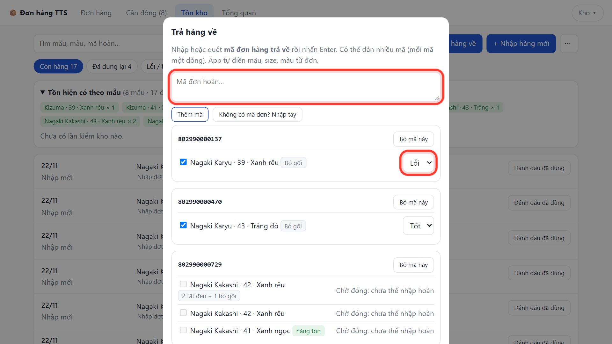
- Bấm "↩ Trả hàng về". Gõ hoặc quét mã đơn rồi Enter; có thể dán nhiều mã (mỗi mã một dòng).
- App tự điền mẫu, size, màu từ đơn. Tick đôi nào được trả về, chọn Tốt hoặc Lỗi.
- Đôi Tốt vào kho dùng lại được. Đôi Lỗi không tính "còn hàng". Đơn gốc chuyển sang "Đã hoàn".
- Mã không tìm thấy hoặc đơn chưa giao sẽ được báo. Không có mã đơn thì bấm "Nhập tay".
- Bấm "Lưu hàng hoàn".
7. Nhập nhầm thì hoàn tác
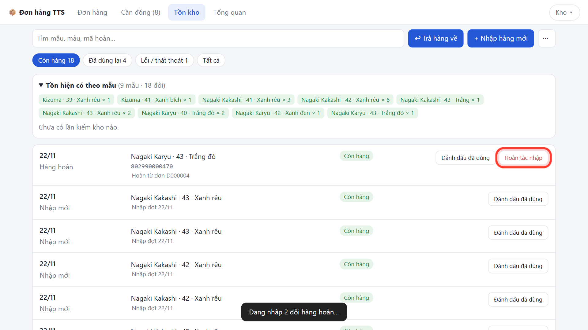
- Ở dòng hàng hoàn nhập nhầm, bấm "Hoàn tác nhập".
- Đơn gốc trở về "Đã giao", dòng tồn bị bỏ khỏi kho (đánh dấu Thất thoát).
- Chỉ hoàn tác được khi đôi đó chưa được dùng cho đơn khác.
8. Kiểm kho cuối tháng
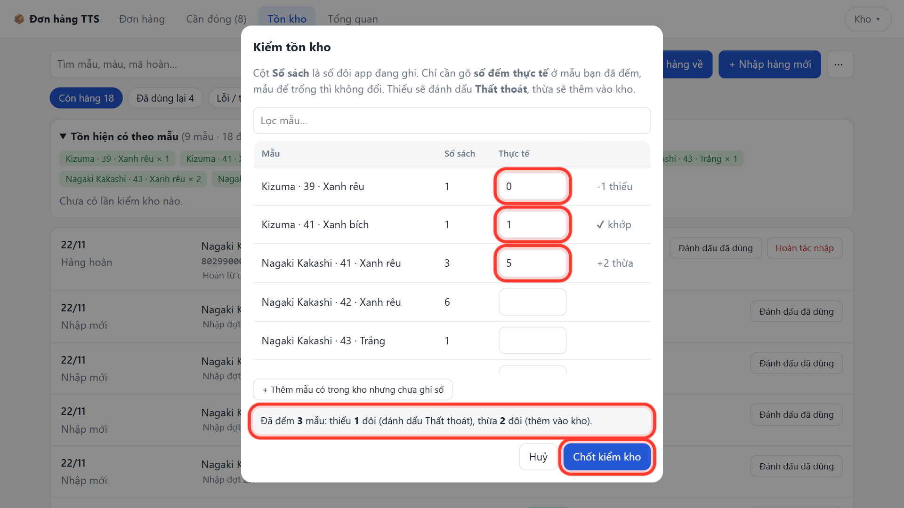
- Bấm "⋯" rồi chọn "☑ Kiểm kho". Cột "Sổ sách" là số đôi app đang ghi.
- Đếm thực tế rồi gõ số ở cột "Thực tế" của những mẫu đã đếm. Mẫu để trống thì không đổi. Ô lọc giúp tìm mẫu nhanh.
- App báo thiếu / thừa theo từng mẫu. "+ Thêm mẫu có trong kho nhưng chưa ghi sổ" cho hàng ngoài sổ.
- Xong bấm "Chốt kiểm kho".
9. Sau khi chốt kiểm kho
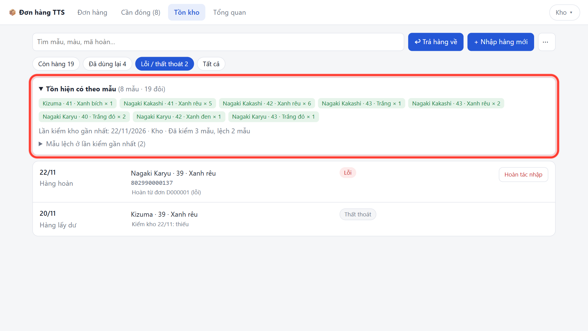
- Đôi thiếu: đánh dấu "Thất thoát". Đôi thừa: thêm vào kho.
- Tab Tồn kho ghi "Lần kiểm kho gần nhất" và danh sách mẫu lệch; chi tiết nằm ở tab "Kiểm kho" trong Google Sheet.
- Từ ngày 25 hàng tháng, nếu chưa kiểm kho app sẽ nhắc.
10. Nhắn tin với Shop
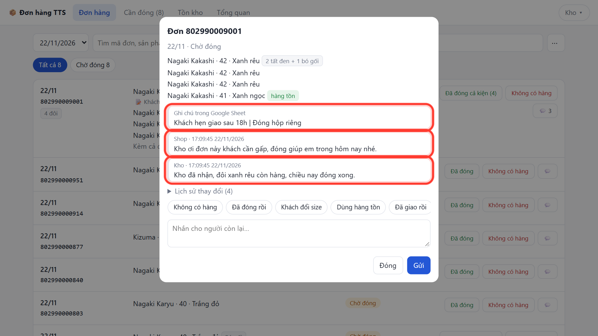
- Bấm biểu tượng tin nhắn 💬 trên đơn để hỏi hoặc báo shop.
- Mọi thay đổi trạng thái đều ghi trong "Lịch sử thay đổi" của đơn.
Dùng trên điện thoại
Trên điện thoại, các tab nằm ở đáy màn hình. Tab Cần đóng hiện từng đơn thành một thẻ để vừa nhặt hàng vừa tick; tab Tồn kho cũng dạng thẻ.
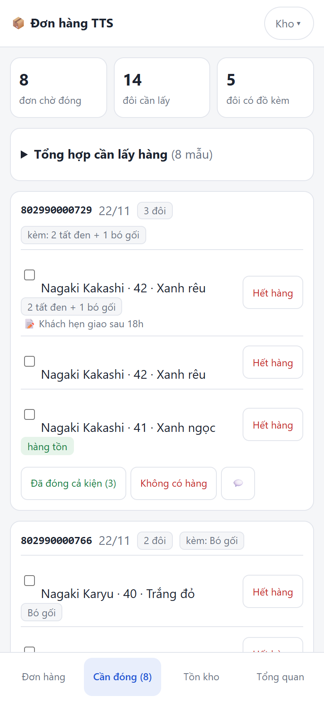
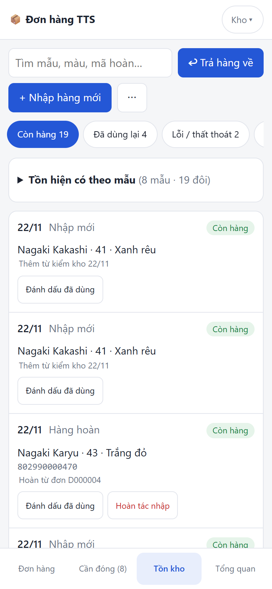
Hàng đã dùng cho đơn: trừ khỏi kho tự động
Nhập nhầm hàng hoàn: bấm Hoàn tác nhập
Cuối tháng: kiểm kho, từ ngày 25 app sẽ nhắc
Trên điện thoại: các tab nằm ở đáy màn hình
Xem lời đọc của video (dạng văn bản)
Xin chào. Đây là video hướng dẫn dùng app Đơn hàng T T S, dành cho kho vận.
Bước một, đăng nhập. Mở đường link của app và nhập mật khẩu của vai trò Kho. Mật khẩu này riêng cho kho, đừng chia sẻ cho người khác. Dùng máy chung thì nhớ bấm Đăng xuất.
Bước hai, tab Cần đóng. Đây là việc cần làm hôm nay. Phía trên là số đơn chờ đóng, số đôi cần lấy và số đôi có đồ đóng kèm. Bảng Tổng hợp cần lấy hàng, bấm mở ra, cho biết cần lấy bao nhiêu đôi của từng mẫu và đồ đóng kèm cần chuẩn bị, để bạn đi lấy một lượt cho nhanh.
Bước ba, nhặt hàng và đóng. Mỗi thẻ là một đơn, ghi mã đơn, ngày, số đôi và đồ đóng kèm. Tick từng đôi khi nhặt xong. Đủ hàng thì bấm Đã đóng cả kiện. Thiếu một đôi thì bấm Hết hàng ở đôi đó để báo cho shop. Hết cả đơn thì bấm Không có hàng. Biểu tượng tin nhắn dùng để nhắn shop.
Bước bốn, tab Tồn kho. Phía trên là các nhãn lọc: Còn hàng, Đã dùng lại, Lỗi hoặc thất thoát. Khung Tồn hiện có cho biết từng mẫu còn bao nhiêu đôi, bấm vào tiêu đề để gập lại. Phía trên có hai nút: Trả hàng về và Nhập hàng mới. Dấu ba chấm bên cạnh chứa mục Kiểm kho.
Bước năm, nhập hàng mới. Chọn sản phẩm, gõ màu, ghi chú nguồn nhập nếu muốn. Ở lưới size, gõ số đôi cho từng size. Ví dụ size bốn mươi mốt ba đôi, size bốn mươi hai năm đôi. App tự tạo đủ số dòng tồn. Không có hàng mới thì bạn bỏ qua bước này.
Bước sáu, trả hàng về. Khi nhận hàng khách trả, bấm Trả hàng về, gõ hoặc quét mã đơn rồi nhấn Enter. Bạn có thể dán nhiều mã cùng lúc. App tự điền mẫu, size, màu từ đơn. Tick đôi nào được trả về và chọn Tốt hoặc Lỗi. Đôi Tốt vào kho để dùng lại, đôi Lỗi thì không tính là còn hàng. Mã không tìm thấy hoặc đơn chưa giao sẽ được báo. Cuối cùng bấm Lưu hàng hoàn.
Bước bảy, nhập nhầm thì hoàn tác. Ở dòng hàng hoàn nhập nhầm, bấm Hoàn tác nhập. Đơn gốc trở về trạng thái Đã giao, dòng tồn đó bị bỏ khỏi kho. Chỉ hoàn tác được khi đôi đó chưa được dùng cho đơn khác.
Bước tám, kiểm kho cuối tháng. Bấm dấu ba chấm rồi chọn Kiểm kho. Cột Sổ sách là số đôi app đang ghi. Đếm thực tế rồi gõ số vào cột Thực tế ở những mẫu bạn đã đếm. Mẫu để trống thì không thay đổi. App cho biết mẫu nào thiếu, mẫu nào thừa. Có thể thêm mẫu có trong kho nhưng chưa ghi sổ. Xong thì bấm Chốt kiểm kho.
Bước chín, sau khi chốt. Đôi bị thiếu được đánh dấu Thất thoát, đôi thừa được thêm vào kho. Lần kiểm gần nhất và các mẫu bị lệch được lưu lại ngay trong tab Tồn kho, đầy đủ hơn nằm trong tab Kiểm kho của Google Sheet. Từ ngày hai mươi lăm hàng tháng, app sẽ nhắc nếu chưa kiểm kho.
Bước mười, nhắn tin với shop. Cần hỏi hoặc báo shop điều gì về đơn, bấm biểu tượng tin nhắn và nhắn ngay trên đơn đó. Shop sẽ thấy tin của bạn, và mọi thay đổi trạng thái đều được ghi lại trong lịch sử.
Nhớ nhanh bốn điều. Một: hàng tồn được shop dùng cho đơn sẽ tự trừ khỏi kho. Hai: nhập nhầm hàng hoàn thì bấm Hoàn tác nhập. Ba: cuối tháng nhớ kiểm kho, từ ngày hai mươi lăm app sẽ nhắc. Bốn: trên điện thoại, các tab nằm ở đáy màn hình. Cảm ơn bạn đã xem.